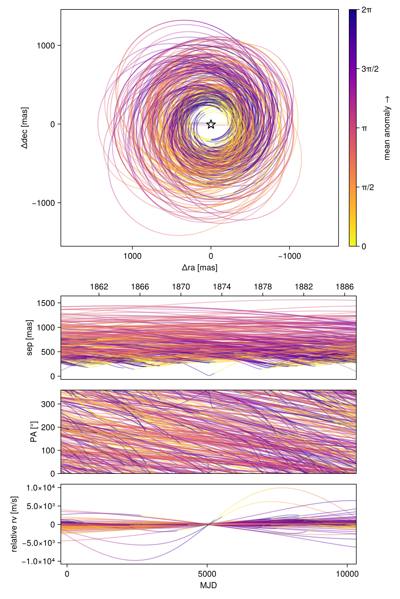

Fit Relative RV Data
Octofitter includes support for fitting relative radial velocity data. Currently this is only tested with a single companion. Please open an issue if you would like to fit multiple companions simultaneously.
The convention we adopt is that positive relative radial velocity is the velocity of the companion (exoplanets) minus the velocity of the host (star).
To fit relative RV data, start by creating a likelihood object:
using Octofitter
using OctofitterRadialVelocity
using CairoMakie
using Distributions
rel_rv_like = PlanetRelativeRVLikelihood(
(;epoch=5000.0, rv=−6.54, σ_rv=1.30),
(;epoch=5050.1, rv=−3.33, σ_rv=1.09),
(;epoch=5100.2, rv=7.90, σ_rv=.11),
)PlanetRelativeRVLikelihood Table with 4 columns and 3 rows:
epoch rv σ_rv inst_idx
┌──────────────────────────────
1 │ 5000.0 -6.54 1.3 1
2 │ 5050.1 -3.33 1.09 1
3 │ 5100.2 7.9 0.11 1The columns in the table should be . See the standard radial velocity tutorial for examples on how this data can be loaded from a CSV file.
The relative RV likelihood does not incorporate an instrument-specific RV offset. A jitter parameter called jitter can still be specified in the @planet block, as can parameters for a gaussian process model of stellar noise. Unlike the StarAbsoluteRVLikelihood, only a single instrument jitter parameter is supported. If you need to model relative radial velocities from multiple instruments with different jitters, please open an issue on GitHub.
Next, create a planet and system model, attaching the relative rv likelihood to the planet. Make sure to add a jitter parameter (optionally jitter=0) to the planet.
@planet b Visual{KepOrbit} begin
a ~ truncated(Normal(10, 4), lower=0, upper=100)
e ~ Uniform(0.0, 0.5)
i ~ Sine()
ω ~ UniformCircular()
Ω ~ UniformCircular()
θ ~ UniformCircular()
tp = θ_at_epoch_to_tperi(system,b,50420)
jitter ~ LogUniform(1, 1000) # m/s
end rel_rv_like
@system ExampleSystem begin
M ~ truncated(Normal(1.2, 0.1), lower=0)
plx ~ truncated(Normal(50.0, 0.02), lower=0)
end b
model = Octofitter.LogDensityModel(ExampleSystem)LogDensityModel for System ExampleSystem of dimension 12 with fields .ℓπcallback and .∇ℓπcallback
using Random
rng = Random.Xoshiro(1234)
chain = octofit(rng, model)Chains MCMC chain (1000×29×1 Array{Float64, 3}):
Iterations = 1:1:1000
Number of chains = 1
Samples per chain = 1000
Wall duration = 37.44 seconds
Compute duration = 37.44 seconds
parameters = M, plx, b_a, b_e, b_i, b_ωy, b_ωx, b_Ωy, b_Ωx, b_θy, b_θx, b_jitter, b_ω, b_Ω, b_θ, b_tp
internals = n_steps, is_accept, acceptance_rate, hamiltonian_energy, hamiltonian_energy_error, max_hamiltonian_energy_error, tree_depth, numerical_error, step_size, nom_step_size, is_adapt, loglike, logpost, tree_depth, numerical_error
Summary Statistics
parameters mean std mcse ess_bulk ess_tail ⋯
Symbol Float64 Float64 Float64 Float64 Float64 Flo ⋯
M 1.1943 0.0966 0.0051 356.1227 522.1150 1. ⋯
plx 49.9996 0.0189 0.0006 1015.1505 587.3972 1. ⋯
b_a 12.4671 4.1374 1.5319 6.5242 20.3102 1. ⋯
b_e 0.2746 0.1473 0.0084 316.9518 400.8315 1. ⋯
b_i 3.0177 0.3445 0.0359 34.1784 176.9804 1. ⋯
b_ωy 0.0185 0.6989 0.0711 102.7712 434.2943 1. ⋯
b_ωx 0.2000 0.6952 0.1170 48.0750 203.7401 1. ⋯
b_Ωy 0.0185 0.6982 0.0552 178.2749 461.8923 1. ⋯
b_Ωx 0.0591 0.7205 0.0625 145.0673 688.8652 1. ⋯
b_θy 0.0443 0.7250 0.0585 155.7970 271.9367 1. ⋯
b_θx 0.0287 0.7081 0.0669 120.3463 454.1743 1. ⋯
b_jitter 21.2336 47.9919 6.7709 35.3838 88.5921 1. ⋯
b_ω 0.3828 1.7375 0.1967 97.4374 303.0157 1. ⋯
b_Ω 0.0825 1.7814 0.1403 198.7458 410.7552 1. ⋯
b_θ 0.0404 1.7598 0.1445 180.3356 359.0846 1. ⋯
b_tp 42859.2211 6926.9390 1527.9873 40.0454 94.3578 1. ⋯
2 columns omitted
Quantiles
parameters 2.5% 25.0% 50.0% 75.0% 97.5%
Symbol Float64 Float64 Float64 Float64 Float64
M 1.0033 1.1342 1.1931 1.2579 1.3891
plx 49.9638 49.9872 50.0001 50.0123 50.0366
b_a 5.9605 9.0571 12.1794 15.2082 21.1325
b_e 0.0114 0.1571 0.2907 0.4058 0.4910
b_i 2.4433 3.0416 3.0975 3.1213 3.1382
b_ωy -1.0675 -0.6779 0.0450 0.7145 1.0266
b_ωx -1.0282 -0.4719 0.4144 0.8271 1.0846
b_Ωy -1.0544 -0.6440 0.0138 0.7109 1.0711
b_Ωx -1.0312 -0.6428 0.1121 0.7777 1.0929
b_θy -1.0702 -0.6677 0.0546 0.7415 1.0689
b_θx -1.0886 -0.6634 0.0901 0.7167 1.1002
b_jitter 2.5558 4.3058 7.6980 17.6970 143.1550
b_ω -2.9715 -0.9570 0.6556 1.7526 2.9534
b_Ω -2.9435 -1.4651 0.2362 1.5868 2.9414
b_θ -2.9596 -1.5138 0.1375 1.5147 2.9374
b_tp 24114.4792 39815.8665 44855.6843 48222.6945 50292.6721
octoplot(model, chain)